[竹北] 全州正味-道地韓國料理
| 餐廳名稱: | 全州正味-道地韓國料理 |
|---|---|
| 另外有一個 https:// www.facebook.com /cctigertw/ 似乎已停止更新 | |
| 地 址: | 新竹縣竹北市文喜街17號 |
| 營業時間: | 週三至週一 11:00-14:00 17:00-22:00 |
| 週二 公休 | |
| 電話 : | 03 657 1778 |
這幾年在竹北吃了好幾間韓國料理了，尤其這兩、三年，幾間韓式餐廳新加入竹北市場，看他起朱樓，看他宴賓客，看他樓塌了，不勝唏噓。 全州正味去年也整修，停止營業好幾個月，韓國館、大醬等屹立不搖。其中 全州正味 最合我胃口，其他店沒有不好，也是有些特色，有機會再介紹。 知道 全州正味 整修完畢，重新開始營業，已經一陣子了，今天想大口吃肉，想到它了，打電話確認有位子就衝了。
全州正味 緊鄰竹筍公園，竹筍公園地下停車場在熱門時段也是會爆滿，還好出發得早，最底下那層的車位還很多， 其實蠻多人都擠在地下一樓找車位。可是如果是去 全州、淡泊、11街 這些餐廳，停到最底層，再爬樓梯上來，就是這些餐廳了。 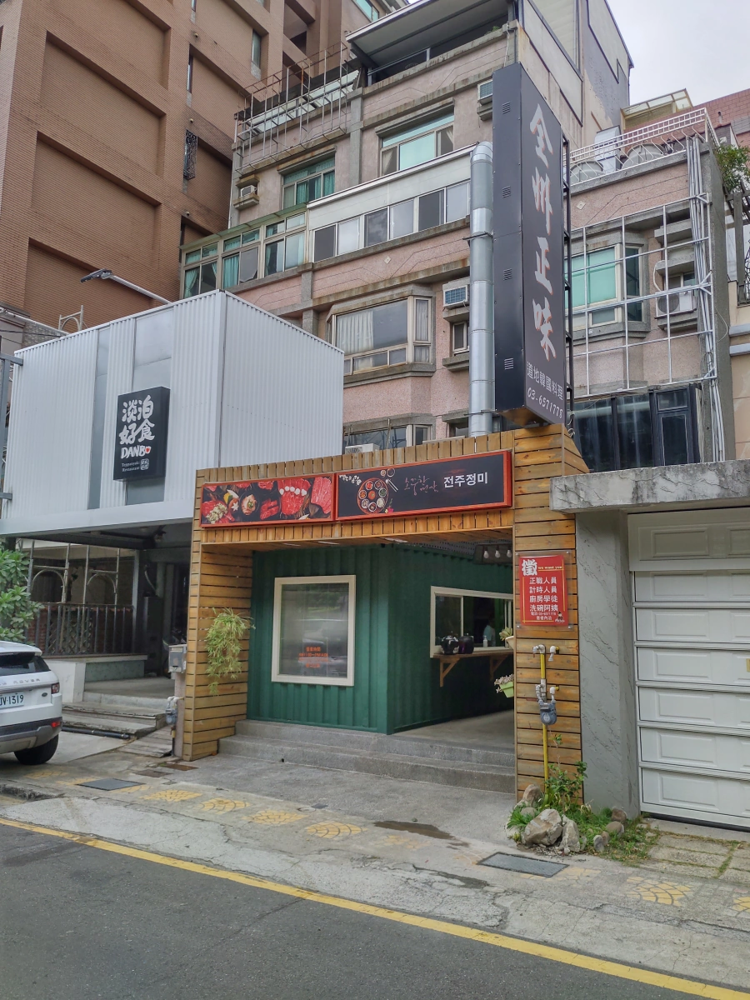
重新整修是將裡面的空間往外延伸，同時將一部分廚房、生炭火的地方搬到最外面綠色貨櫃這裡。 綠色貨櫃最外面的玻璃，則印著營業時間。 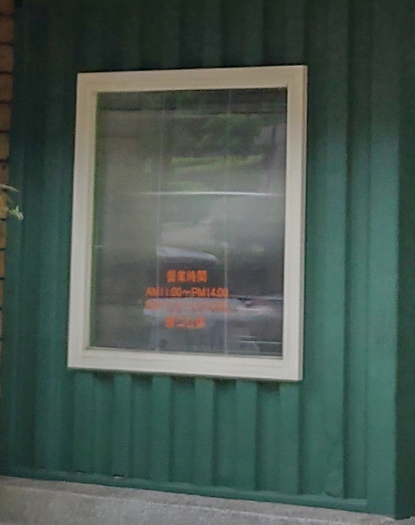
一樓的座位變成 一邊是六人桌，一邊是四人桌，兩邊都是 4 列。 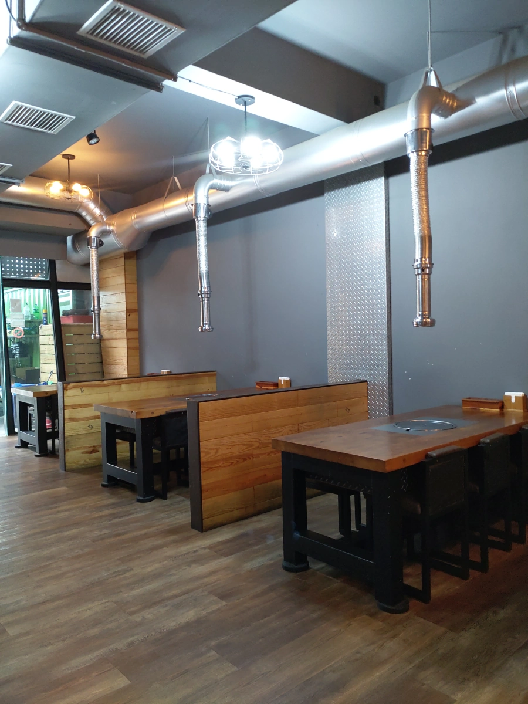
菜單，官方網頁的照片裡，有更清楚的菜單。 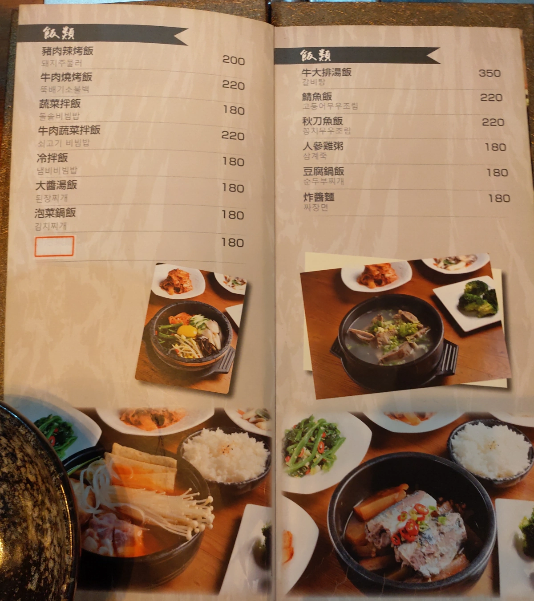 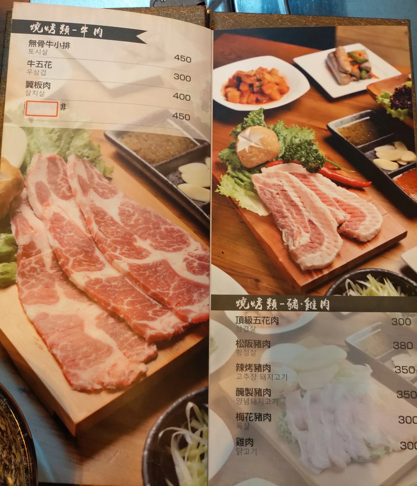 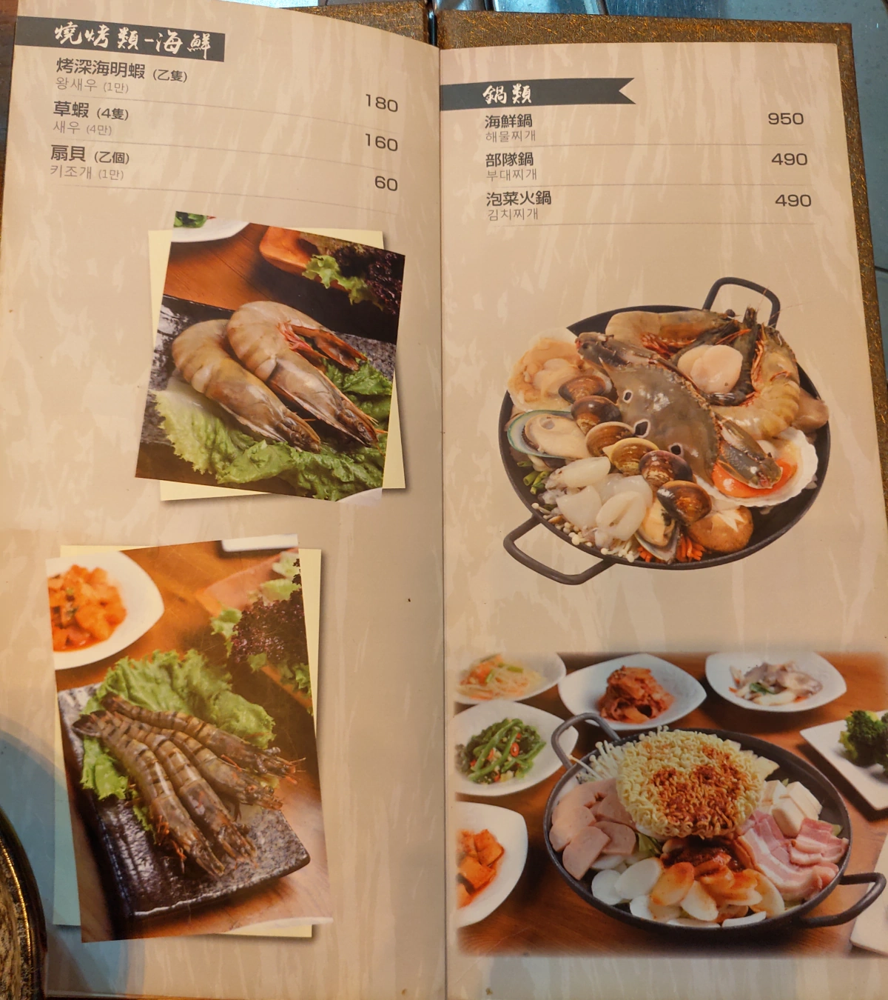 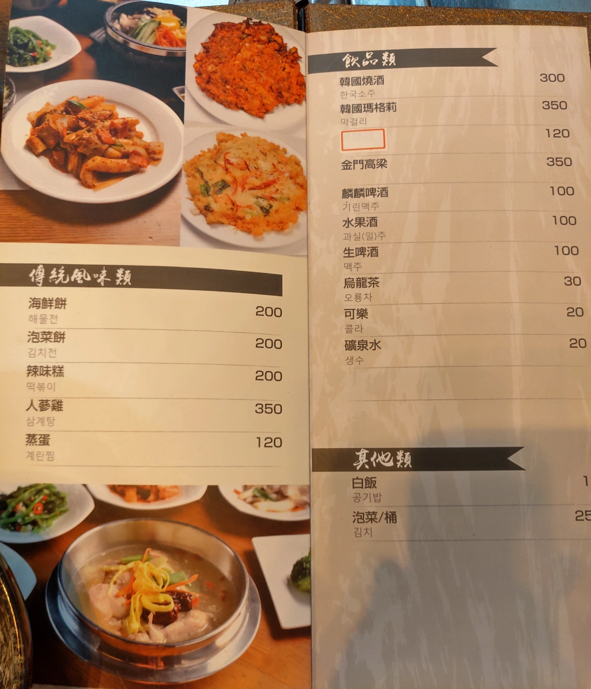
今天要大口吃肉，但女王剛吃早餐又飽飽的，所以只點了 兩份豬一份牛 的烤肉 - 頂級五花肉，醃製豬肉 與 牛五花。再點一個豆腐鍋飯。
上了六個小菜，韓式餐廳好處就是這些，小菜弄得不錯，又通常能續。除了經典的泡菜外，我覺得 豆芽、甜不辣、絲瓜 這三個小菜也不錯， 大概是口味下的重吧，我覺得很好吃。
這時候發現調味料三格，只用了兩格，我好歹吃很多次全州了，記憶中是 竹北比較少見的 麻油加鹽 調味料。 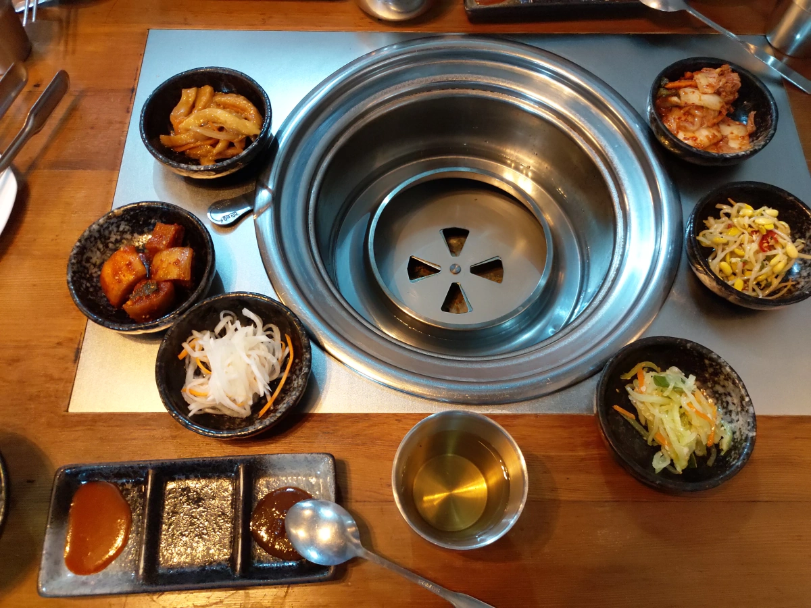
豆腐鍋飯 舀一點到自己碗裡，才想起來還沒拍照，趕快拍。 豆腐鍋 湯頭要好喝，可是少數韓國餐廳就很奇怪，像是清水煮泡菜，以為那樣就會好喝。 白飯則是已經用另一個有蓋子的小鐵碗送上了。 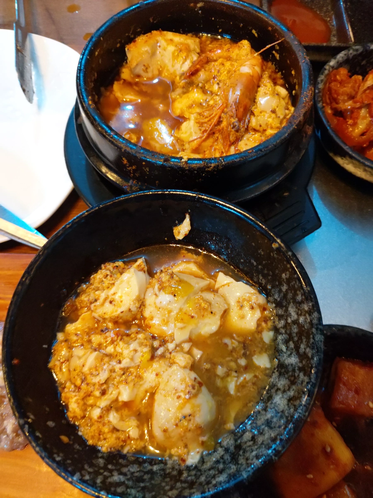
特級豬五花肉，其實有兩片，只有照正在烤的那塊。 店家有提供剪刀、夾子。烤熟了，就用剪刀剪成小塊，再烤一陣子，就能吃了。
店家有提供 蒜片、蔥絲，在下圖的下方。還有青菜，懶得照了。青菜有洗乾淨，還很脆綠。這三樣都能續。用青菜，包肉、包蒜片，包蔥絲，甚至把小菜也包一些，就是豐盛版的韓國烤肉了。 單獨吃肉 當然也不錯。 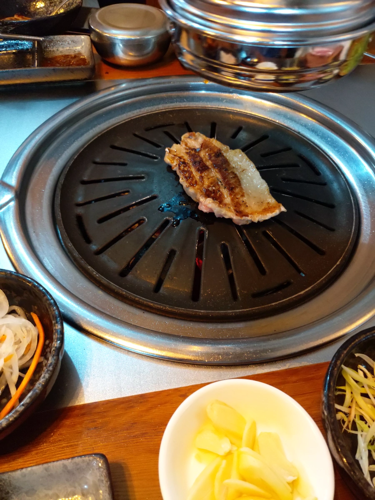
這時候，老闆來看一下，說要換烤盤。我就順口問說怎麼沒有以前那種 麻油加鹽 的醬料，老闆哈哈一笑，說他們忘了，交代服務生補。 之後就用另外的小碟送上了。下圖左上角那個小碟，就是 麻油加鹽，我覺得竹北地區，似乎比較少店家提供這個，我還頗愛 麻油鹽 這個醬料。 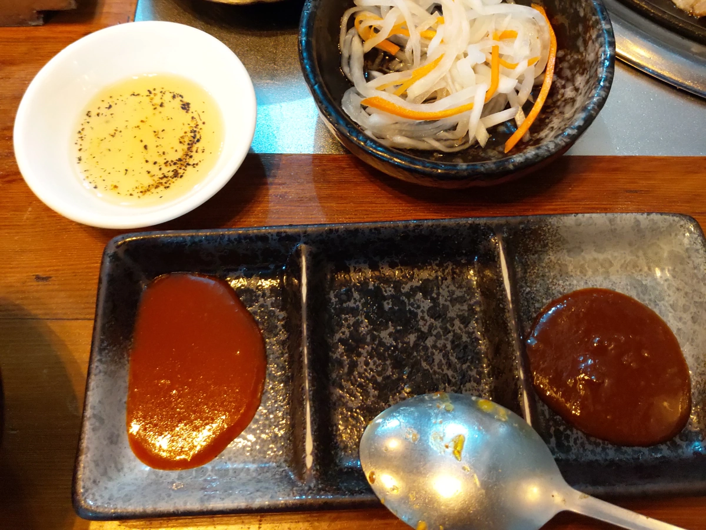
烤盤上，右邊比較薄的是 牛五花，中央厚一點的是醃製豬肉。我的經驗是，如果店家沒很強調牛肉等級，那還是薄的牛五花比較安全，會比較軟。 大塊牛肉，比較容易有筋，而且有時候筋要留一部分，增加口感，所以店家通常不會先剃掉筋。今天選牛五花，應該選對了，雖然份量不大，但是最便宜，吃起來也好吃。 烤盤上的肉，當然只是正在烤的，生肉懶得拍了。 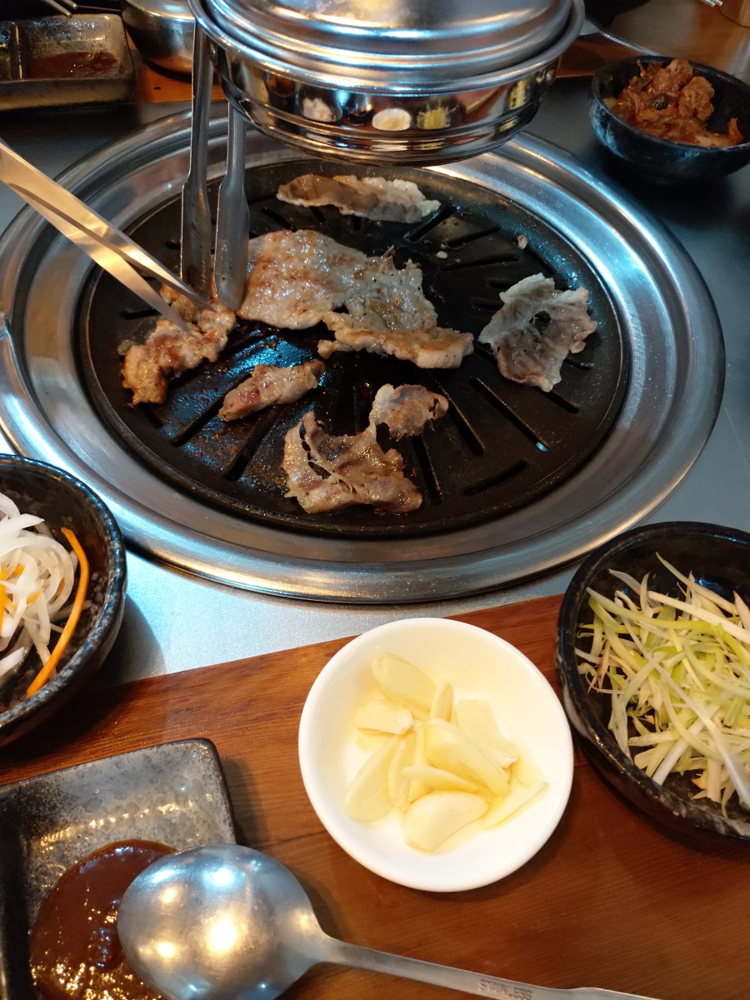
年輕時，去韓國出差幾次，學到一點韓國文化。像韓國人是不把碗拿起來就口的，他們覺得以口就碗是狗，餐廳是一盤一盤食物擺你前面，拿筷子或湯匙去舀起來吃。 如果拿空杯遞過來，是覺得你是貴客，由你倒酒，他會喝。不要傻傻地接過酒杯或是躲開不倒酒。幾乎每餐都有海苔，台灣也許海苔貴，就沒這個傳統了。
全州正味，就是合我口味，是大口吃肉的好地方，有機會就會回訪。